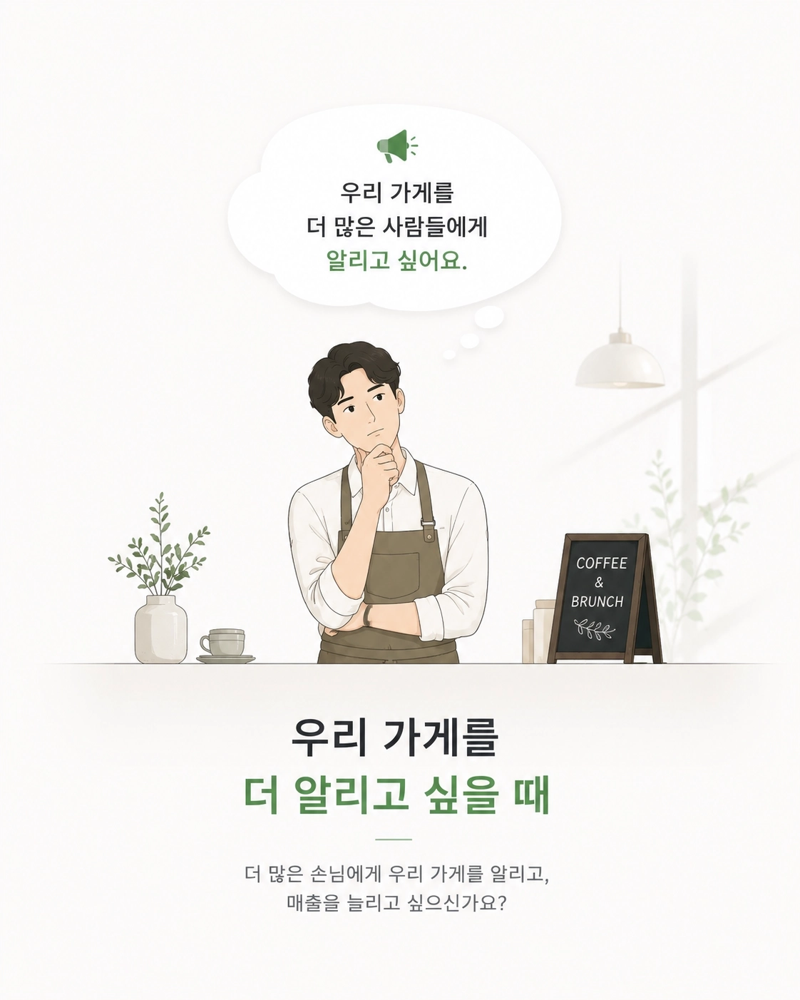
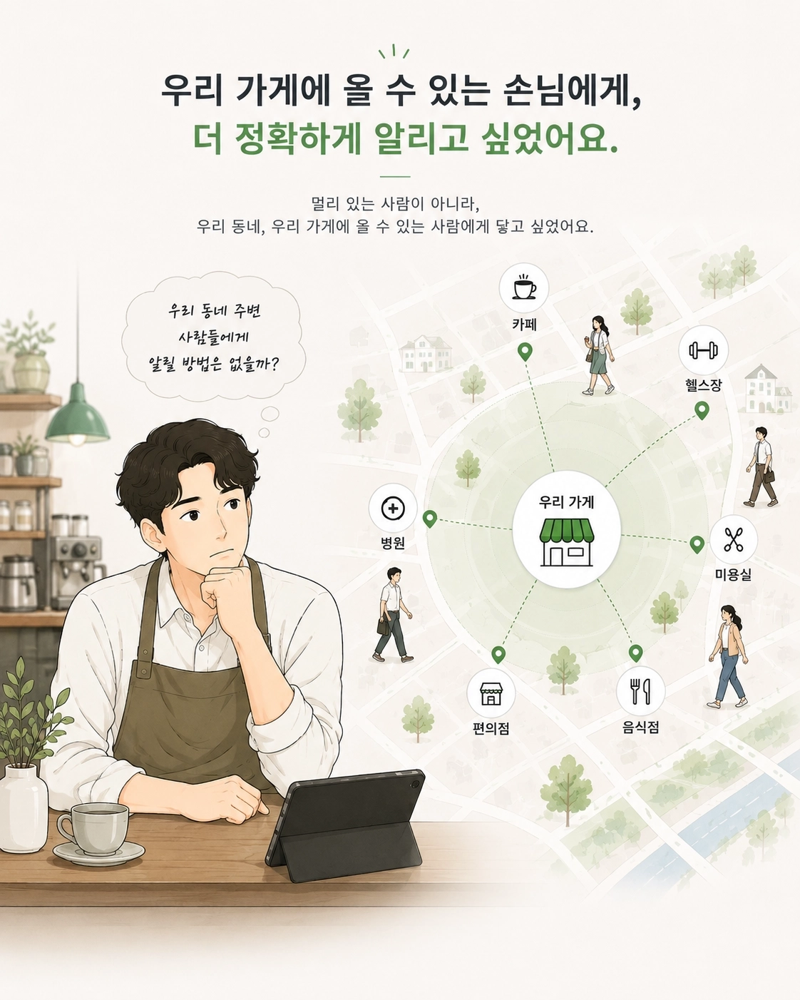
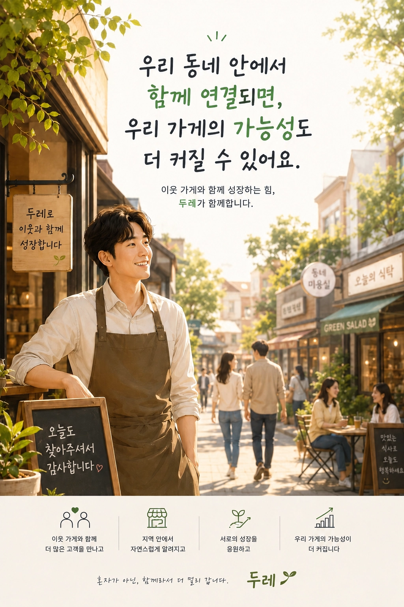

안다미로 스시
경기 구리시의 방문 고객에게 우리 가게를 자연스럽게 소개해 보세요.
안다미로 스시에 홍보하기우리 가게를 알리는 새로운 방식
이미지 안의 폰트와 구성은 원본을 그대로 유지했습니다. 웹페이지에서는 각 내용을 읽는 흐름과 신청 동선만 정돈했습니다.



가족가게 리스트
가족가게는 이웃가게를 소개할 수 있는 지역 매장입니다. 원하는 가족가게의 고객에게 우리 가게를 알릴 수 있어요.
경기 구리시의 방문 고객에게 우리 가게를 자연스럽게 소개해 보세요.
안다미로 스시에 홍보하기